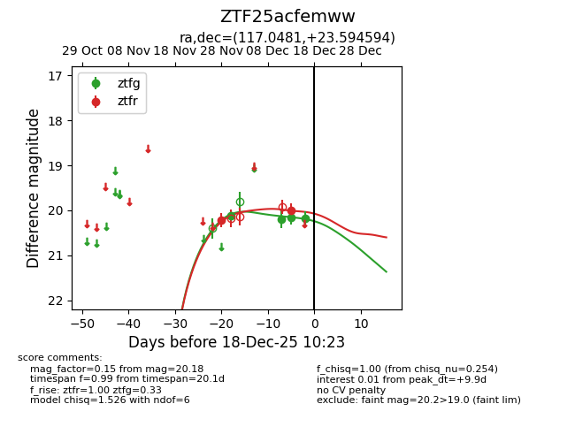
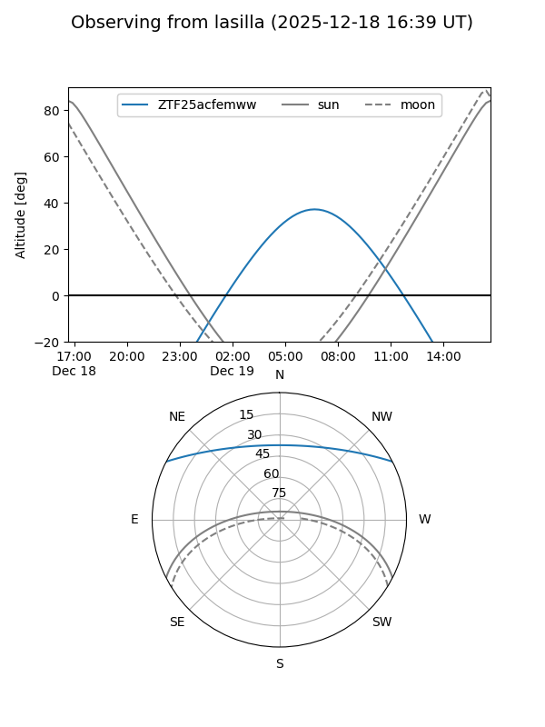

ZTF25acfemww
Target ZTF25acfemww at 2025-12-18 11:17
Aliases and brokers:
FINK: fink-portal.org/ZTF25acfemww
Lasair: lasair-ztf.lsst.ac.uk/objects/ZTF25acfemww
ALeRCE: alerce.online/object/ZTF25acfemww
alt names
ZTF25acfemww (ztf,fink_ztf)
Coordinates:
equatorial (ra, dec) = 117.0481,+23.59459
equatorial (HMS+DMS) = 07:48:11.54,+23:35:40.54
galactic (l, b) = (196.9887,+22.48398)
Photometry
last ztfg=20.18, ztfr=20.00
4 ztfg, 2 ztfr detections
Lightcurve

Visibility


Additional plots